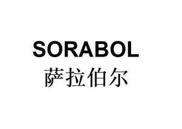

Trade Mark Journal No.2025/043 24 October 2025
UK00004279550 17 October 2025 (8,14,21)

- Class 8
- Knife sharpeners; Gardening tools (Hand operated -); Instruments and tools for skinning animals; Spanners [hand tools]; Blades for knives; Table cutlery [knives, forks and spoons]; Cutlery of precious metals; Cutlery, kitchen knives, and cutting implements for kitchen use; Sterling silver table spoons; Electric hair crimper; Razor blades; Molding irons; Hair clippers; Manicure implements; Electric hair clippers; Table knives, forks and spoons for babies; Table knives, forks and spoons of plastic; Hair styling appliances; Trimmers [hand operated tools]; Cutlery for use by babies.
- Class 14
- Figurines [statuettes] of precious metal; Commemorative statuary cups made of precious metal; Commemorative coins; Commemorative medals; Precious metals; Necklace charms; Ornamental sculptures made of precious metal; Busts of precious metal; Ornaments, made of or coated with precious or semi-precious metals or stones, or imitations thereof; Trinkets of bronze; Jewellery being articles of precious metals; Trophies made of precious metals; Trophies coated with precious metal alloys; Gold medals; Gold jewellery; Rhodium alloys; Objet d'art of enamelled gold; Objet d'art made of precious stones; Works of art of precious metal; Silver objets d'art.
- Class 21
- Glasses, drinking vessels and barware; Skillets; Heat insulated domestic vessels of porcelain; Commemorative statuary cups of porcelain, ceramic, earthenware, terra-cotta or glass; Jardinieres of glass; Non-electric cooking pans; Stew-pans; Household or kitchen utensils; Kitchen utensils; Heat-insulated containers; Kitchen mitts; Statues, figurines, plaques and works of art, made of materials such as porcelain, terra-cotta or glass, included in the class; Watering cans; Brushes; Tooth brushes; Toothpicks; Appliances for removing make-up, non-electric; Gloves for household purposes; Portable pots and pans for camping; Cookware [pots and pans].
Hongliang Yuan
Representative: ILVCN LIMITED